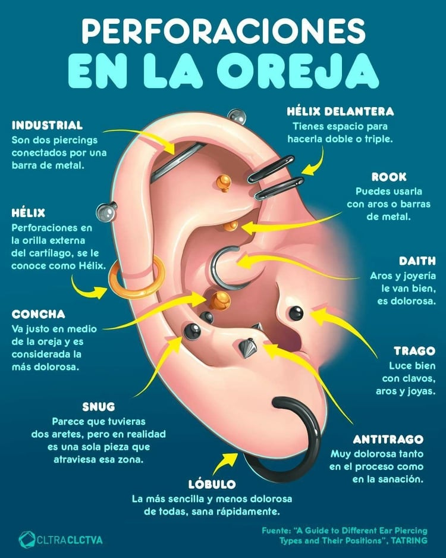

@BURDO_TATTTOO
PIERCING SHOP

La perforación de la oreja, ya sea en el lóbulo o en otras partes como el tragus, ha sido asociada con diversos beneficios para la salud y el bienestar a lo largo de diferentes culturas y tradiciones. Algunos de estos beneficios incluyen:
Reducción de migrañas y dolores de cabeza crónicos: La estimulación de ciertos puntos de acupresión en la oreja puede ayudar a aliviar la frecuencia e intensidad de las migrañas y dolores de cabeza.
Control de la ansiedad y el estrés: La perforación de la oreja puede tener un efecto calmante en el sistema nervioso, lo que ayuda a reducir la ansiedad y el estrés.
Estimulación del sistema inmunológico: Algunos creen que la perforación de la oreja puede activar puntos de acupresión que fortalecen el sistema inmunológico, ayudando al cuerpo a combatir enfermedades.
Potencial para aliviar problemas de sueño: La estimulación de ciertos puntos en la oreja puede mejorar la calidad del sueño y ayudar a tratar trastornos del sueño como el insomnio.
Mejora de la autoestima: Para muchas personas, la perforación de la oreja es una forma de expresión personal y de estilo que puede contribuir positivamente a su autoestima y confianza.
Indicación de estatus social y cultural: En diversas culturas, los pendientes y perforaciones en las orejas han sido símbolos de estatus social, pertenencia a una comunidad o prácticas religiosas, lo que añade un significado cultural y tradicional a la práctica de perforarse la oreja.
En resumen, la perforación de la oreja no solo puede ser un acto de moda o expresión personal, sino que también puede estar asociada con beneficios para la salud física, emocional y social, según las creencias y prácticas culturales de cada individuo y comunidad.
El piercing de nariz, también conocido como Nostril, es un accesorio de moda que ha existido desde el siglo XVI, teniendo sus raíces en la India. Originalmente, era un símbolo de feminidad, elegancia y rebeldía, utilizado por muchas mujeres para expresar su individualidad. Hoy en día, el piercing en la nariz ha evolucionado para convertirse en un elemento destacado de la moda, apreciado por su estética y la amplia variedad de joyas disponibles.
Las joyas para el piercing nostril ofrecen una gama diversa de opciones, desde diseños simples y discretos hasta piezas de moda y elegantes, que agregan un toque de originalidad al rostro. Además, su popularidad entre las celebridades ha contribuido a su atractivo como accesorio de moda.
A medida que el piercing de nariz se ha vuelto más aceptado y común, ha dejado de tener un significado cultural o simbólico específico, convirtiéndose en una elección estilística puramente estética. Esta evolución ha llevado a un aumento en la demanda de joyas para este tipo de piercing, ya que las personas buscan expresar su estilo personal y realzar su apariencia con un toque de singularidad. Como resultado, el mercado de joyería para piercing de nariz ha experimentado un crecimiento significativo, ofreciendo una amplia variedad de opciones para satisfacer las preferencias de los clientes más exigentes.
¡Descubre el arte de la expresi√≥n personal con los piercings en el labio! üíã Tanto si buscas realzar tu apariencia como destacar tu personalidad √∫nica, los piercings en el labio son la tendencia de moda que ha conquistado corazones en todo el mundo. Desde adolescentes hasta adultos, todos encuentran en esta forma de adornar su boca una manera de mostrar su estilo y creatividad.
¬øPrefieres el encanto del piercing en el labio superior o la audacia del piercing en el labio inferior? ¡T√∫ decides c√≥mo expresarte! Con un tiempo de cicatrizaci√≥n que var√≠a entre 6 y 12 semanas, cada piercing en el labio es una declaraci√≥n de individualidad que requiere cuidado y atenci√≥n. Pero no te preocupes, siguiendo las recomendaciones de cuidado y manteniendo una buena higiene, tu piercing en el labio cicatrizará adecuadamente para lucir fantástico. üíÑ‚ú® #PiercingsEnElLabio #Expresi√≥nPersonal #Estilo√önico